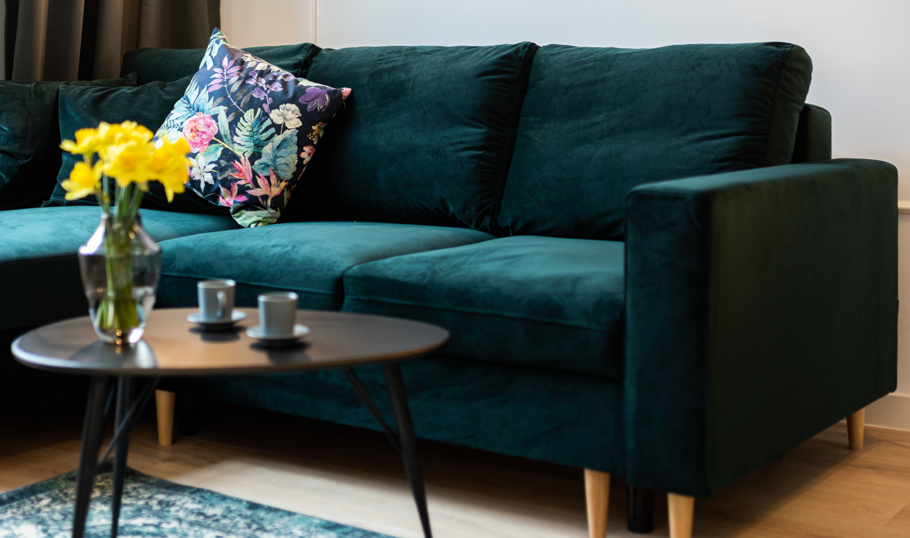

 Styl życia, Wnętrza Jak odmienić swoje mieszkanie na wiosnę? Łatwe sposoby na trudne czasy Zainspiruj się naszymi wnętrzami i zmień aranżację swojego mieszkania na wiosenną. Wystarczy kilka dodatków, wiosenne kwiaty, zioła w kuchni. Resztę zrobią kolor i światło! Czytaj więcej
Styl życia, Wnętrza Jak urządzić domowe biuro? Aby komfortowo pracować z domu, wcale nie potrzebujemy prywatnego gabinetu. W każdej przestrzeni możemy wygospodarować wolny kącik i zaaranżować wygodne domowe biuro, dzięki któremu nasza praca będzie nie tylko bardziej efektywna, ale też całkiem przyjemna! Home office to już nie luksus. Pracownicy coraz częściej dostają możliwość pracy zdalnej, z której ochoczo korzystają. Siedzenie przed komputerem, […] Czytaj więcej
Katowice, Podróże, Śląsk Katowice – świetna baza wypadowa. Cz. I – Pociąg Zastanawiasz się, co zrobić z wolnym weekendem? Ruszaj w drogę!Katowice to wspaniała baza do podróżowania pociągiem, świetnie skomunikowana z miastami nie tylko w całej Polsce, ale też Europie. Zabieramy Cię dziś na wycieczkę. Katowice – stolica i największe miasto województwa śląskiego. Jest też głównym ośrodkiem komunikacyjnym regionu i jednym z największych w kraju. Z łatwością […] Czytaj więcej
Styl życia, Wnętrza Najważniejsze trendy we wnętrzach w 2020 Poszukujecie świeżych inspiracji, planujecie mały remont lub po prostu lubicie być na bieżąco? Mamy dla Was krótki przewodnik po najciekawszych trendach 2020 roku. Z zaciekawieniem obserwujemy zmieniającą się modę. Ostateczny wygląd projektowanej przez nas przestrzeni jest przecież tak samo ważny, jak jej wygoda czy funkcjonalność. W powodzi zmieniających się trendów i nowości staramy się jednak […] Czytaj więcej
Śląsk, Styl życia Top 9 ośrodków narciarskich w województwie śląskim Na Narty warto wybrać się zarówno w Alpy, jak i… w Beskidy! Niezależnie od tego, czy stawiacie pierwsze kroki na stoku, czy narciarska pasja towarzyszy Wam od lat, warto bliżej przyjrzeć się ośrodkom zlokalizowanym w naszym regionie. My wybraliśmy 9 najciekawszych punktów na śląskiej mapie sportów zimowych. Sezon na białe szaleństwo nabiera rozpędu, a wraz […] Czytaj więcej
Katowice, Śląsk, Styl życia Najlepsze śląskie marki na prezent Szukacie pomysłów na świąteczny lub urodzinowy upominek dla najbliższych? Nadchodzimy z pomocą i przedstawiamy najciekawsze lokalne marki i sklepy, dzięki którym Wasze prezenty będą unikatowe i zaskoczą wszystkich obdarowanych. W powodzi prezentowych propozycji, którymi zarzucają nas galerie handlowe, ciężko wyłowić coś godnego uwagi. Warto jednak zadać sobie trochę trudu i poszukać lokalnych marek. Dlaczego? Bo […] Czytaj więcej
Styl życia, Wnętrza Naturalne materiały we wnętrzach Naturalność powróciła do mody i do naszych domów. Urządzając swoje mieszkanie, od kilku już lat coraz chętniej sięgamy po naturalne materiały. Co sprawia, że są one tak uniwersalne i jak możemy wykorzystać ich potencjał w swoim wnętrzu? Naturalne materiały to zawsze trafiony wybór. Są trwałe, ekologiczne, pozytywnie wpływają na mikroklimat pomieszczeń i wyglądają stylowo niezależnie […] Czytaj więcej
Podróże, Śląsk, Styl życia 6 niezwykłych miejscówek wokół Katowic do zwiedzenia jesienią i zimą Listopad to w Polsce czas przejściowy. Skończyła się złota polska jesień, a do białej zimy jeszcze trochę zostało. Jak spędzić ciekawie czas poza Katowicami, gdy za oknem plucha i mgła? Odpowiedzią mogą być ciekawe muzea i obiekty, których na Śląsku nie brakuje. Poniżej przedstawiamy sześć propozycji na te bardziej deszczowe dni. Z centrum aglomeracji dojedziecie […] Czytaj więcej
Styl życia, Wnętrza Jak urządzić małe mieszkanie? 10 sposobów na zaaranżowanie niewielkiej przestrzeni. Podczas urządzania małego mieszkania stajemy przed wieloma dylematami: praktyczność czy wygląd? Minimalizm czy przytulność?Jeśli nie wiesz, jak zaaranżować własne cztery kąty tak, by były funkcjonalne, wygodne i przede wszystkim „twoje”, zapraszamy do lektury naszego sprytnego poradnika. Niewielkie mieszkanie ma swoje niekwestionowane zalety – mniejszy metraż to proporcjonalnie niższe opłaty, mniej powierzchni do wyposażenia, zagospodarowania, a […] Czytaj więcej
Jedzenie, Katowice, Śląsk Ciao Katowice! Oto najlepsze pizzerie w okolicy Znacie kogoś, kto nie lubi Włoch i włoskiej pizzy? No właśnie, my też nie. Do słonecznej Italii na co dzień nam daleko, ale do prawdziwej pizzy na szczęście już nie. W Katowicach (i najbliższej okolicy) od kilku lat zjecie smacznie i naprawdę po włosku. A my podpowiemy, gdzie. Jedni wolą w wersji jak najprostszej, z […] Czytaj więcej
Styl życia, Wnętrza Wnętrze ze stylem część II – styl eklektyczny, boho i glamour O stylach wnętrzarskich możemy rozmawiać godzinami. Stąd kolejny artykuł, w którym przyglądamy się najciekawszym kierunkom i podążamy tropem inspirujących miejsc. Tym razem stawiamy na połączenia: nieoczywiste, barwne i nieraz bardzo odważne. Sprawdźcie trzy style wnętrzarskie, które obudzą w was pasję do zestawiania ciekawych elementów: styl eklektyczny, boho i glamour. Niech żyją odważne połączenia! Szeroko pojętą […] Czytaj więcej
Katowice, Podróże, Śląsk 6 zielonych miejsc wokół Katowic – propozycje na wiosnę i lato Sezon wiosenno-letni to idealny czas, by poznać bardziej zielone oblicze Śląska i wybrać się na spacer lub rower po jednym z wyjątkowych obszarów, jakich nie brakuje w naszym regionie. Dziś przedstawiamy wam 6 ciekawych miejsc wokół Katowic, które zachwycą każdego wyjątkową przyrodą. Zapraszamy do Pszczyny, Bytomia i Mikołowa. Do wszystkich tych miejsc dostaniecie się z […] Czytaj więcej
Katowice, Śląsk, Styl życia Jak być eko w centrum miasta? cz.2 Rosnąca świadomość ekologiczna i związany z tym niepokój o los naszej planety coraz częściej powodują, że odczuwamy potrzebę zmian. Chcemy działać i brać czynny udział w walce o poprawę jakości naszego życia. Tylko jak zacząć? Najlepiej i najprościej – od siebie i zrewidowania swoich codziennych nawyków. W naszym poprzednim artykule (link znajdziesz tutaj) przekonywaliśmy Cię, jak […] Czytaj więcej
Katowice, Podróże, Śląsk 5 zielonych miejsc wokół Katowic – idealnych na lato Katowice uchodzą za najbardziej zalesione miasto w województwie śląskim. Są tu ciekawe skwerki, zadbane parki, a nawet prawdziwe lasy i rezerwaty przyrody! Stolica regionu tonie w zieleni, ale także okoliczne miejscowości mają wiele do zaoferowania miłośnikom odpoczynku na łonie natury. Jeśli jesteś osobą aktywną, która lubi spacerować, jeździć na rowerze, pływać lub zwiedzać, to tutaj […] Czytaj więcej
Katowice, Styl życia Jak być eko w centrum miasta? Świadomość ekologiczna w społeczeństwie stale wzrasta. Dostrzegamy problem marnowania jedzenia, deficytów wody pitnej lub, wyjątkowo popularny zwłaszcza ostatnio, zanieczyszczeń powietrza. Trochę się na ten stan naszej planety złościmy, a trochę po cichu marzymy, że ktoś za nas znajdzie rozwiązanie. Cudownych recept jednak nie ma, a zmiany mogą dokonać się jedynie metodą małych kroczków i zaangażowania […] Czytaj więcej
Styl życia, Wnętrza Wnętrze ze stylem – minimalizm, styl skandynawski i industrialny Są wnętrza, w których czujemy się bardziej sobą. Przytulne, dopasowane do naszego charakteru, oczekiwań i zainteresowań. W których wszystko gra ze sobą i układa się w jeden spójny koncept. Jedni z nas potrzebują przestrzeni, nowoczesnych form i odważnych środków wyrazu; inni ciepła, sielskiego klimatu i przytulności. Podobnie jak w muzyce czy modzie, mieszkanie może mieć swój […] Czytaj więcej
Jedzenie, Katowice, Styl życia Good morning Kato! Najlepsze śniadaniowe miejsca w Katowicach Aromatyczna kawa w loftowym klimacie, kameralne bistro na śniadanie przed pracą, wypasiona kanapka na słonecznym tarasie, a może bochenek najlepszego chleba na leniwy weekendowy brunch? Przedstawiamy nasz subiektywny wybór najlepszych śniadaniowych miejscówek. Na dzień dobry! Katowice zmieniają się na naszych oczach. Na mapie miasta sukcesywnie przybywa ciekawych miejsc, w których z przyjemnością posiedzimy przy wieczornym […] Czytaj więcej
Katowice, Śląsk, Styl życia Top 7 festiwali muzycznych w Katowicach Serce miasta bije w różnych rytmach. Czasem to najbardziej rozchwytywany pop, rap czy hip-hop, z którym stolica Górnego Śląska jest mocno związana. Innym razem to klasyka w najlepszym wydaniu, jazz, elektronika i alternatywa, a nawet cięższe, gitarowe brzmienia. Witajcie w Katowicach, Mieście Muzyki UNESCO i poznajcie 7 najciekawszych festiwali muzycznych, które warto odwiedzić. Muzyczny sezon […] Czytaj więcej
Katowice, Śląsk, Styl życia Aktywne Katowice – gdzie znajdziesz solidną dawkę endorfin? Jakie cechy mają najciekawsze, nowoczesne miasta? Przede wszystkim odpowiadają na zróżnicowane potrzeby swoich mieszkańców i przyjezdnych. Takie są Katowice. Dla aktywnych, bo głównie o nich będzie dziś mowa, stolica Górnego Śląska, ma szeroką i ciekawą ofertę. Sprawdź, gdzie znajdziesz najciekawsze sportowe obiekty w Katowicach. Trend na prowadzenie zdrowego trybu życiu rośnie w siłę globalnie i […] Czytaj więcej
Katowice, Śląsk, Styl życia Kato, południowa stolica street artu Serce Górnego Śląska tętni sztuką ulicy. A wszystko dzięki inicjatywie, która od 8 lat zmienia przestrzeń miasta. Festiwal Katowice Street Art Urban Sound 2019, bo o nim mowa, to kontynuacja legendarnego Katowice Street Art Festivalu. O najciekawszych muralach, skrajnych emocjach, wielkich nazwiskach i rozwoju sztuki ulicy na Śląsku mówi Łukasz Kałębasiak, współtwórca festiwalu, a także […] Czytaj więcej
Jedzenie, Katowice, Styl życia Mała Azja w Kato czyli 5 zaskakujących miejsc z kuchnią orientalną Katowice to nie Bangkok, ale najlepsze smaki Tajlandii nikomu nie są tu obce. Podobnie jak kulinarne tajniki innych dalekich zakątków Azji. Na mapie najciekawszych katowickich knajpek istnieją miejsca, w których atmosfera pozwala przenieść się w czasie i przestrzeni, a ceny zachęcają do częstego eksplorowania menu. Poznajcie 5 ciekawych punktów z kuchnią orientalną, które pozytywnie Was […] Czytaj więcej
Katowice, Śląsk 9 miejsc, które musisz zobaczyć w Katowicach W Polsce nie brak malowniczych miejsc, przyciągających uwagę zabytków i nowoczesnych muzeów. Kraków, Gdańsk, Wrocław czy Warszawa, już na stałe weszły na karty przewodników Lonely Planet i stanowią obowiązkowy punkt na trasie każdego turysty. Do niedawna na tej liście na próżno było szukać stolicy Górnego Śląska. Jednak dziś to właśnie Katowice są stawiane jako przykład […] Czytaj więcej
Wnętrza Modne wnętrze w 2019 roku, czyli nadchodzące trendy Nowy Rok to także nowe trendy we wnętrzach. Pastele, odważne połączenia i maksymalizm to hity nadchodzącego sezonu. Pora na zmiany we wnętrzach. Pastele z akcentem Wciąż stawia się na kolory, które pojawiać się będą tym razem w wersji pastelowej, stanowiącej idealną bazę do mocnych akcentów i ciemnych barw. Jasnoliliowy, seledynowy, jasnożółty czy przykurzony i rozbielony […] Czytaj więcej
Wnętrza Mieszkania w skandynawskiej filozofii „hygge” Biel połączona z mocnymi kolorami kojarzy się z lekkością, prostotą i nowoczesnością. Do tego stonowane barwy i nawiązanie do przyrody poprzez wykorzystanie naturalnych materiałów takich jak drewno, beton czy wełna. To właśnie cechuje skandynawski design, który pokochały miliony ludzi na świecie. To styl dla tych, którzy lubią złapać głęboki, świeży oddech wchodząc do własnego domu. […] Czytaj więcej
Styl życia Konsjerż ? Ależ oczywiście! Słowo „concierge” jest pochodną francuskiego słowa „comte des cierges” i określa osobę, która wiedziała o wszystkim co działo się w zamkach i pałacach, ponieważ odpowiadała za utrzymanie pokoi i dbała o wyposażenie. Później do obowiązków Konsjerża doszła odpowiedzialność za gości oraz spełnianie ich indywidualnych potrzeb. Boom w turystyce wywołał potrzebę utworzenia stanowiska konsjerża – osoby […] Czytaj więcej
Styl życia O nas Wellcome Home oferuje w pełni wyposażone, pięknie zaprojektowane mieszkania na wynajem średnio i długoterminowy w centrum Katowic. Co sprawia, że jesteśmy wyjątkowi? Jesteśmy właścicielami wszystkich mieszkań w naszej ofercie. Dbamy o nie tak, jakby były naszym domem. Dlatego też możemy być całkowicie pewni ich najwyższej jakości. Zgodnie z naszą misją “Więcej niż wynajem” dostarczamy nie […] Czytaj więcej